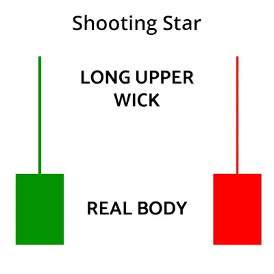
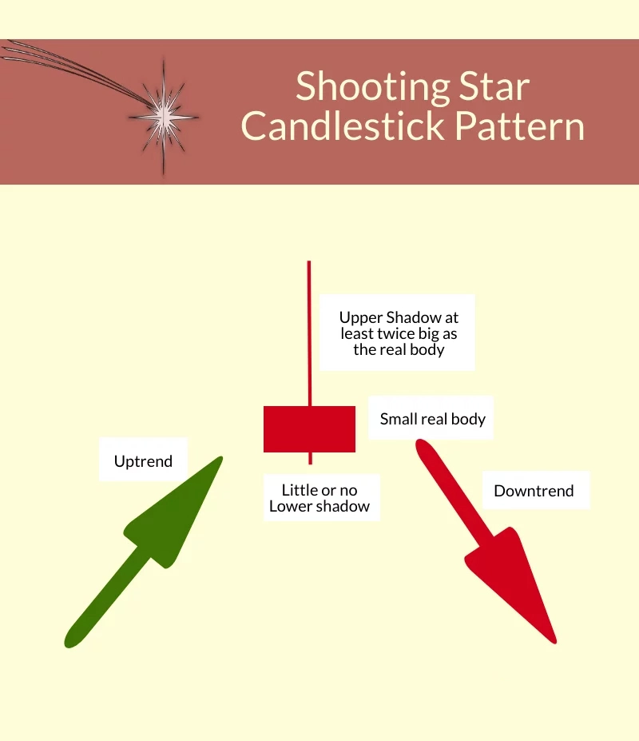
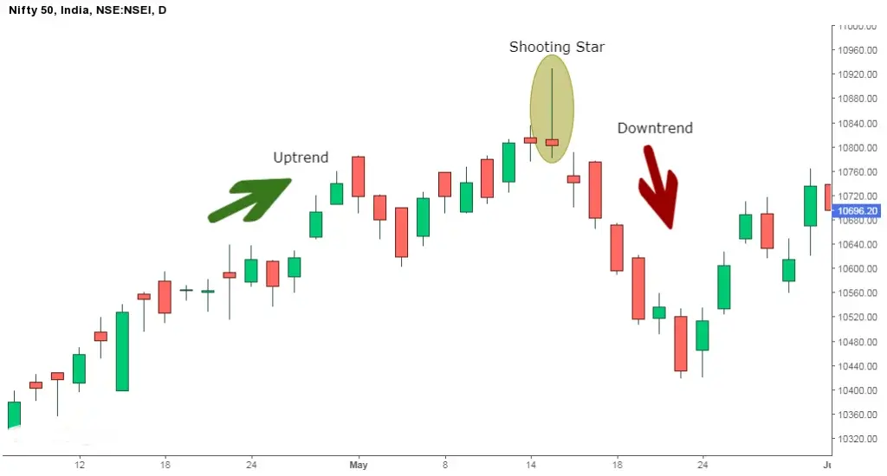

शूटिंग स्टार एक प्रकार का कैंडलस्टिक पैटर्न है जो सुरक्षा के मूल्य का आरंभ करता है, बहुत बढ़ जाता है, लेकिन फिर शुरुआती मूल्य के करीब बंद होता है।
दिन की सबसे ऊंची कीमत और खुले मूल्य के बीच की दूरी का शूटिंग स्टार के शरीर के दोगुना से अधिक होना चाहिए।
यह उपयोग के अंत में होता है और एक बियरिश रिवर्सल की संकेत देता है।
| Formation of Shooting Star |
यहां शूटिंग स्टार कैंडलस्टिक पैटर्न का निर्माण है:

| शूटिंग स्टार आपको क्या बताता है? |
शूटिंग स्टार एक संभावित डाउनसाइड रिवर्सल संकेत देता है और यह सबसे अधिक प्रभावी होता है जब यह 2-3 लगातार ऊपर की ओर बढ़ने वाली मोमबत्तियों के बाद फॉर्म होता है जिनमें उच्चतम उच्च दर का ज़्यादातर दूरी शूटिंग स्टार के बॉडी से दोगुना होता है।
एक शूटिंग स्टार एक ट्रेडिंग सत्र के दौरान खोलने और मजबूती से बढ़ने लगता है, जो आखिरी ट्रेडिंग सत्रों में देखा जाने वाला खरीदारी दबाव दिखाता है।
ट्रेडिंग सत्र के अंत में, विक्रेताओं ने कीमत को खोले के करीब नीचे खींच दिया है।
इससे पता चलता है कि खरीदार दिन के अंत तक अपने कंट्रोल से बाहर हो गए हैं और विक्रेताओं ने उनकी जगह ले ली है।
लंबी ऊपरी छाया दर्शाती है कि खरीदार अपनी स्थिति खो रहे हैं जबकि कीमत खुले के पास लौटती है।
शूटिंग स्टार के बाद का कैंडल गैप डाउन होता है और फिर भारी वॉल्यूम पर नीचे जाता है। यह कैंडल मूल्य उलटवा देने और इसकी पुष्टि करने में मदद करता है जो इस बात की घोषणा करता है कि मूल्य गिरता रहेगा।
यह कैंडल मूल्य उल्टी की दिशा में पलटने की पुष्टि करने में मदद करता है और इसका मतलब है कि मूल्य नीचे जारी रहेगा।
| Trading Example: |
शूटिंग स्टार के साथ ट्रेड करने से पहले, निम्नलिखित बातों को याद रखना चाहिए:
निफ्टी के डेली चार्ट में शूटिंग स्टार कैंडलस्टिक पैटर्न का निमुद्ध उदाहरण नीचे दिया गया है। हम देख सकते हैं कि शूटिंग स्टार एक मजबूत उच्चतर रुझान के बाद बना है और एक बिशेषकर उल्टे ट्रेंड की सूचना देता है।

| Limitations of Shooting Star: |
ट्रेडिंग निर्णय लेने के लिए किसी एक मुमकिन विकल्प पर निर्भर नहीं होना चाहिए, जैसे शूटिंग स्टार में एक कैंडल पैटर्न।
इसलिए अनुमोदन की आवश्यकता होती है, अगले दिन के कैंडल या अन्य तकनीकी विश्लेषण संकेतों द्वारा आप सत्यापित कर सकते हैं।
कैंडलस्टिक का उपयोग करते समय नुकसान को नियंत्रित करने के लिए स्टॉप लॉस का भी उपयोग करना चाहिए।
किसी तकनीकी विश्लेषण के द्वारा संकेतित महत्वपूर्ण स्तर के पास कैंडलस्टिक पैटर्न होने पर, यह और भी महत्वपूर्ण हो जाता है।